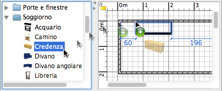

| Aggiungere porte, finestre e arredamento | |||
|
Per aggiungere porte, finestre o arredamento alla tua casa, trascina uno o più pezzi di arredamento dal catalogo alla piantina della casa o all'elenco dell’arredamento.  Puoi inoltre selezionare alcuni pezzi del catalogo e poi scegliere Mobilio > Aggiungi alla casa o cliccare sullo strumento Aggiungi alla casa.
Quando i pezzi vengono rilasciati nella piantina, la posizione del loro angolo superiore sinistro sarà nel punto in cui hai
rilasciato il pulsante del mouse. I pezzi aggiunti alla casa sono selezionati e disegnati simultaneamente nella lista arredamento, nella piantina e nella vista 3D. Durante il caricamento del modello 3D dei pezzi aggiunti, questi pezzi sono rappresentati come quadrati bianchi nella vista 3D. |
|